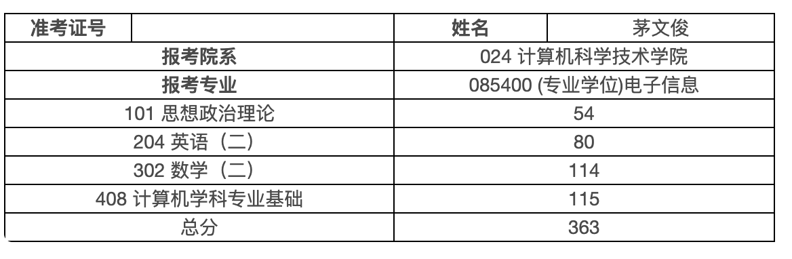

<div class="middle center"> <div style="width: 100%"> # 考研经验分享 21级计算机科学与技术 茅文俊 <hr/> 网址：`yrablog.cn/slides/kaoyan/index.html` 2025.4.23 </div> </div> <!--h--> <div class="middle center"> <div style="width: 100%"> # 个人背景介绍 </div> </div> <!--v--> ## 初复试基本信息 * 报考院校：复旦大学-计算机科学与技术学院-电子信息（专硕） * 二次志愿方向：智能化软件工程与系统 * 初试成绩：  * 复试成绩： <!--h--> <div class="middle center"> <div style="width: 100%"> # 择校篇 </div> </div> <!--v--> ## 关于择校（1） * ⭐️ **选择 >>> 努力** * 有人<blue>290+</blue>，顶九等额复试；有人<red>370+</red>，过不了复试线 * 关注**大小年**（华科24计专<red>370</red>，25计专<blue>315</blue>，网安<blue>300</blue>） * 初试因素：11 / 22 / 自命题；初试占比；改卷地区等 * 不擅长考试的同学，慎选 <red>11408</red> * 初复试占比：7:3 / 6:4 / 5:5，是否有斩杀线 * 复试因素：考核形式；二次志愿；双盲等 <br> > 名校情结：无视一切，不要埋没梦想 <!-- .element: class="fragment" --> <!--v--> ## 关于择校（2） * 读研目的 * 转计算机/实习就业/续费三年——考虑放实习、无导师 or 🐑导 <br> * 科研兴趣，学术追求（主要针对于冲985，非就业向/未确定）<br> [跨考者如何准备清北华五级别学校计算机研究生？-邱锡鹏-知乎](https://www.zhihu.com/question/56455219/answer/149235266) * 研究方向 极大程度决定了 未来发展方向 * 主动寻求资源，以保研的态度对待考研 * 体现主动与自驱，更受老师青睐 <!-- .element: class="fragment" --> > 结合自身具体情况分析<br> **「个人为例」**不擅长初试，擅长复试，有名校情结+科研追求，遂选择复旦 <!-- .element: class="fragment" --> <!--v--> ## 上岸的方式有很多种... * 弥补18岁的遗憾，考上名校 * 进到强组，做梦寐以求的科研 * 续费三年，随便找个学校缓冲一下 * ... * 没考上的代价 → * 大概率失去校招进入中大厂的机会 * 一般流程：暑期实习（还来得及）→转正/春秋招冲更好的（就业向多刷下牛客） * 一年的<red>浪费</red>（身心健康、社交娱乐......） > 有意向报考：复旦、浙软、北大软微、武大、人苏、科软、南航、杭高、ict、深大等院校，且需要信息情报的话可以线下私信我 <!--v--> ## 相关资源 * 王道vx公众号：院校汇总、分数线汇总（最新的应该还在统计，可以看去年的） * 民间公众号：抄底信息员全全、灰灰考研 * 目标院校官网（一手信息） * 民间、王道的院校qq群 <!--h--> <div class="middle center"> <div style="width: 100%"> # 初试篇 </div> </div> <!--v--> ## 提前声明 1. <red>**一切的经验建议，都要结合自身情况来调整，不同分数段应有不同的备考策略**</red> 2. 可以通过多看知乎经验贴、加考研群等策略，平衡信息差 * <del>但避免像我一样天天水群</del> 3. 中后期，可以拉几个研友组个小群，分享信息互相交流 4. 关于书籍课程，有能力支持正版，没能力可以网盘 5. 关于报班： * 强烈不推荐大几w的线下报班，烧钱并且解决不了信息差 * 仅自律性极差的同学，可以考虑 * 建议可以用小钱解决的，尽量少添麻烦 * 后面会推荐个人备考过程中，帮助极大的课程 <!--v--> ## 政治（1）前期 * 个人成绩54分<blue>「旦计均分63」</blue> * 一般建议 8 ~ 11 月开即可，重要性最低 * 在11月以前只需要学习马原与史纲 * 前期可以看马原与史纲的课程视频，当**下饭菜** * 推荐：徐涛强化 / 苏一 / 张修齐速成课 * 全程可以在小程序刷肖1000题 * 推荐：苍盾（多次付费） / 南山（一次付费） * 注意单科线，例如，科软政治卡60，复旦政治卡50 > 鉴于25年的政治难度，建议不晚于10月份，尽早启动 <!--v--> ## 政治（2）后期 * 11 月后可以开始在小程序上刷模考卷选择题 * 优先肖四肖八、余峰、米鹏的卷子，多多益善 * 可以搞个OCR的电子版背诵手册，直接搜索需要的内容 * 12月肖4出来后，正式进入主观题备考 * 25肖四几乎没有押中一道题 * 推荐：B站大牙的肖四带背 * 强烈推荐：<red>研木易精缩</red>（考浙软的二战研友推荐） * 极大程度地缓解了背诵压力 * 学习如何组织主观答案，最后会有节课教如何抄材料❗️ * 字迹依然很重要 > 市面上资料繁杂众多，跟紧一个好好学即可，避免内耗与焦虑 <!--v--> ## 英二（1） * 个人成绩80分，客观56/60<blue>「旦计均分76」</blue> * 慎选英一，但26英一难度大概率会降，英二估计不变 * 重要性略高于政治，远小于数学 408 **【客观题】25难度略高于24** * 背单词从备考开始坚持到上考场，一般推荐墨墨 / 不背 / 扇贝均可 * 阅读，推荐APP扇贝考研（方便），可以用大模型辅助，不推荐听课 * 个人经验： 1. 英二的阅读理解就是在ABCD中选出文中某句话的同义句 * 25英二后两篇难度偏高，看不懂很正常 * 可以通过定位关键词来找 2. 第一遍看不懂，速读完后读第二遍可能就懂了（第一遍理解文章大意） <!--v--> ## 英二（2） **【主观题】25难度低于24** * 9-11月开作文即可 * 英二翻译——推荐B站up主：歌妩古咕咕咕咕 * 小作文：一律推荐 monkey，以最短的时间拿下6-8分（满分10） * 大作文：尽量借助LLM自己组模板和训练 * 模板推荐：见山学长（冷门、内容质量高，但依然建议自己写） * 25主观题我基本全套了模板，分并不高 <br> * 完型与翻译晚点开即可 * 英语利用空闲时间学，重视，但较于数学专业课，应分配较少的时间 * 时间分配多少，均基于个人基础 <!--v--> ## 数二——注意点 > “我一直觉得，考试基本都是考的你下限，很少有人考试能发挥出自己的上限。对于数学这门拉分很严重的科目，怎么提高自己的下限才是确保你高分的充分条件。”——24数一150浙群的狗哥 * 个人成绩114分<blue>「旦计均分123」</blue> * 强烈建议数学不好的同学报个答疑班，推荐：夜雨、零壹答疑班 * 数二重视计算能力，不要欺骗自己 * 不要赶进度，踏踏实实完成每个阶段的任务，结果不会差 * 不需要着急开模拟卷，重视强化深度，提高上限（小群研友25数一147的建议） * 不需要等26更新，24、25的资源完全够用 一般顺序：高数+线代基础→高数+线代强化→真题+模拟卷→查缺补漏 <!--v--> ## 数二——高数（1） **【基础阶段】** * 跟紧任意老师踏踏实实均可，我当时是25版张宇30讲 * 基础阶段有余力建议把每个定理都证明一下（147✌🏻的建议） **【强化阶段】** * 数二选手的高数强化，主线只推荐武忠祥老师（数二的神❗️） * 支线上，补充各类B站up主的小专题视频（二重积分推荐up主帕拉迪宇的大观，很全面），建议额外学一下张宇老师的表格积分法，另外还有行列式计算不定积分等小技巧 * 适当补充技巧，譬如微分算子法等完全没有必要学 * 究极强烈推荐B站up主：**高数答疑张老师❗️**（大量专题答疑） * 推荐没咋了、夜雨、线代铜、帕拉迪宇、蓝染等b站up主 <!--v--> ## 数二——高数（2） * 习题集：（贪多无意义） * 推荐精做880与660，适当补充900题A组与1000题即可 * 版本用24、25的就行，无需等up主b站讲解更新 * 个人也做了武老师的严选题，很不错 * 证明题建议在开模拟卷时期的中后段再启动，推荐夜雨证明题课 * 对于数学好的 / 想冲击140的，建议适当补充蒲和平等相关内容，具体可以参考最后我推荐的研友经验贴 <!--v--> ## 数二——线代（1） **【基础阶段】** * 对于线代基础不好的（比如我），初期很容易学崩溃，放平心态 * 推荐姜晓千老师的线代基础课，清晰全面，且课时短 **【强化阶段】** * 个人是刷了24张宇线代强化课（25版应该也行） * 期间补充了西电杨威老师的强化讲义相关例题与练习题 * 强烈推荐杨威老师的每日一题（B站有讲解，推荐题但不推荐强化课） * 题目综合度极高，有一定难度，不少题都非常妙 * ❗️与高数不同，建议积累二级结论，在证明二级结论的过程中可以进一步扎实线代基本功 * 每年都会有至少一道线代填选，难度较高，有点擦边；但线代大题基本白给 <!--v--> ## 数二——套卷 * 套卷目的：查缺补漏，调整考场策略，提高分数下限 * 推荐8-9月就能开了，最晚不要超过10月（个人是6月左右开的） * 起码保证上考场前，定时准点，保质保量地完成20来张模拟卷 * 建议上午8:30-11:15完成 * 真题与模拟卷可以穿插做 * 模拟卷推荐： * 首推没有勘误的合工大超越卷（各年份均可），多多益善 * 数二选手推荐李六李四，可以适当补充张八张四 * 建议每个月参加欧几里得的万人模考 * 压力卷推荐芳3，25李擂8，王谱等（可以不卡时间慢慢做） * 及时订正 与 复盘考场策略 * <red>分数不是重点，找到问题才是</red> <!--v--> ## 数二——查缺补漏与其他 * 套卷发现知识型问题后，及时找视频、习题与强化讲义去补上漏洞 * 如果有策略型问题，建议翻阅知乎 / 询问老师学长学姐 * 查缺补漏的讲义推荐李正元复习全书（粉书） * 回归真题推荐，王志超老师的《考研数学这十年》 <br> 【其他经验】 * 错题可以直接在习题集上做标记，不同标记可以代表不同的错误原因 * 我是 2为粗心，3为知识性漏洞，4为蒙对的，5为完全不会 * <red>**少听课，多动笔做题，杜绝耗时做漂亮的笔记，重视大脑的训练**</red> <!--v--> ## 408（1） * 个人成绩115分<blue>「旦计均分108」</blue> * 个人究极教训：<red>**审题**</red>（在408考试中，能占30%） * 四月份时，从学长处了解后，从「王道」转到了全面「零壹」 <br> * 关于是否报班: * 目标>=115的强烈建议（有能力的话）报个零壹，物远超所值（尤其是os课程和顶级答疑，以及免费的复试指导） * 对于目标为100左右的，建议以120为目标，跟王道也够用，但需要找个靠谱的答疑来源（考研群、学长、老师等） * 不建议跟b站学生up主的课（习题讲解可以听），大部分自己也没学好，更不建议生啃黑书 <!--v--> ## 408（2）个人经历（仅作参考） 【基础阶段】 * 5月之前速通了一遍王道的DS、计组与OS * 5-7月跟完了零壹的计组、OS与计网基础课，并完成了王道书上所有的选择题 * 7月在零壹一模中溃败（92分）并请教研友（他最后131分）后，开始针对性n刷基础课并紧跟零壹强化 【强化与冲刺阶段】 * 7月下旬-9月底，完成了零壹的强化课，随后再次在零壹的二模中溃败（102分） * 10-11月，完成了零壹的冲刺课，开始做历年真题，至12月上旬完成全部；期间进行了零壹三模（118分） <!--v--> ## 408（3） * 8月前——基础做选择题，8-10月强化做大题，10-12月套卷真题 * 408 四门课内容极多，反反复复才能扎扎实实，<u>**多轮次**</u> * 王道课后选择，存在不少<red>野题</red>，非真题的大题没必要刷 * 408考查的是<red>通用设计</red>，是<red>应试考试</red>，而非具体架构、前沿理论 * 即便是真题，某些选项也可能存在不完全严谨的——应试，选择最合理的 * 不要钻牛角尖，唯一目标只有考试拿分即可，时刻清醒当前做的事是否有利于提分（看os源码❌，冷门考点花费大量精力❌...） * 摘抄式做笔记❌，耗时的美丽排版❌，带有理解的框架梳理✅，可以用白纸法查缺补漏 * 逃离舒适区，<red>直面薄弱点</red>，学起来痛苦的才是值得学的 * 通过<red>理解</red>来学透知识本身，例如编译链接、文件系统等难点，不能只是背诵概念的<red>文科式学习</red>❌ <!--v--> ## 408（4） * 尽量不要放知识点，408出题老头佷妖，搭建完整的知识体系 * 套卷：真题>>>零壹>竞成>其他所有 * 408的整张卷子包含很多考察点，每个点分值约1-4分，注意做题策略不要死磕，选择题≤75min * <red>好好审题</red> <br> * 推荐湖科大的计网 + 计组，图文并茂 * 不推荐大黑书，教材推荐计组袁春风老师的紫书/白书，尤其是存储器与CPU（会颠覆王道讲的内容）；IO相关的内容（例如DMA）还可以补充华科谭志虎老师的书；计网可以拿谢书作参考资料；os均不推荐 * ds推荐[我的笔记](https://ka66tk2dnql.feishu.cn/docx/JiNbdyVkIoWqicxY1iHc6hi8nEh?from=from_copylink)，比较全面 * 强烈推荐零壹考研，不推荐王道正版 * 更多408学习方法推荐看🍠：[零壹遇见](https://www.xiaohongshu.com/user/profile/679353d6000000000a03e54c?xsec_token=ABi_lG5EoOONEl_xyGBgFCEzqoBcVbDJ_EVj0-EZOOSHw%3D&xsec_source=pc_search) <!--h--> <div class="middle center"> <div style="width: 100%"> # 复试篇 </div> </div> <!--v--> ## 复试准备（1）（主要针对复试为王的学校） * 重视复试，不少同学倒在这一步（被刷很痛苦） * 机试准备：优先代码随想录+力扣hot100、150，根据院校不同补充不同的习题（参考蓝桥杯备考策略） * 笔试准备：找学长学姐要资料，其他基本和初试备考差不多的 * 专业面准备流程：<br> 1. 了解并确立目标科研方向与导师 * AI、sys系统、软工、网安... * 导师🐑/push、是否放实习、人品待遇等 2. 了解组内工作/论文→准备相关项目 * 项目经历、准备相关专业知识 * 前沿课程学习（软工→静态分析；sys→分布式、CPU设计；AI→RL、LLM前沿架构、微调等...） <!--v--> ## 复试准备（2）其他建议 * 多请教，多找资源，信息差很重要，不同学校复试差异巨大 * 专注于准备专业知识和科研、项目经历，注意bg对口，其余不重要 * 初试时建议利用空闲时间，初步思考大致的科研方向，随手记录idea * 项目建议：<u>科研+横向开发+算法demo/造轮子</u>，一般2-3个 * 强烈介意利用好<red>毕设</red>，补充科研经历的空白 * 找到<red>目标</red>后的慢慢推进，比无厘头地狂学效果更好 <hr> 个人经历参考: * 初试备考以前定好了导师+方向 * 初试后，阅读了一部分组内论文，确定了具体的科研（毕设）方向 * 结合了组内的一份工作 + 某年顶刊的一份工作，完成了毕设 * 额外补充了静态分析等前沿课程的学习 <!--h--> <div class="middle center"> <div style="width: 100%"> # 其他与资料补充 </div> </div> <!--v--> ## 其他与资料补充 * 细水长流地坚持住，每一步都踏踏实实（同时初试备考最好多运动） * 勇敢的人先享受世界：多请教学长/学姐/老师（不要胆怯，有时候会有很多意外收获） * 更详细的经验贴指路： * [25复旦计院408双非一战上岸经验/感谢贴-Yra的文章-知乎](https://zhuanlan.zhihu.com/p/1890792242681189897) * 帖子里包含了我小群许多高分研友的经验贴友链 * [民办三本408-131分](https://zhuanlan.zhihu.com/p/1891509513636524718) * [华科本复旦初试401分](https://zhuanlan.zhihu.com/p/1891263849635742914) * [浙软初试第二414分(零壹状元)](https://www.xiaohongshu.com/user/profile/6614371e0000000007007317?xsec_token=YBJiGXA_IOseh_5kDFv1vweatTRB1LdCm4zLjCczDJZHk%3D&xsec_source=app_share&xhsshare=CopyLink&appuid=5e251d2d0000000001006c99&apptime=1743763794&share_channel=copy_link) * 零壹3群：973795111；复旦民间考研qq大群：632264180 * PPT网址：`yrablog.cn/slides/kaoyan/index.html` * 有问题可以进一步问我，vx：`Yra_1216`